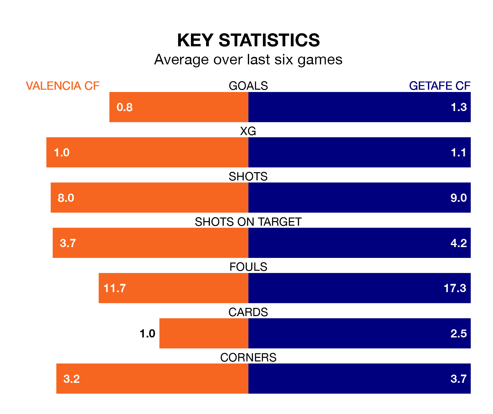

Getafe CF travel to Valencia CF on Saturday lunchtime in La Liga.
The visitors come into the game on the back of a draw in their last match, having tied with UD Las Palmas 3-3 at home, with goals from Nemanja Maksimović, Jaime Mata and Mason Greenwood.
Valencia also drew their last match, 2-2 against Real Madrid, with their goals scored by Roman Yaremchuk and Hugo Duro.
In Borja Mayoral, Getafe have one of the league's most on-form strikers so far this season. He has notched 15 goals in 27 appearances, to sit second in the scoring charts.
His goal rate of one every 144 minutes is quicker than that of Duro Perales, Valencia's top scorer with a goal every 198 minutes, and a total of 11 goals in 26 games.
In the last 10 years, Valencia and Getafe have played each other on 20 occasions. Valencia won six of them, Getafe eight, and they drew six times.
On average, Valencia scored 1.2 goals and Getafe 1.3 in those matches.
Their last meeting was on December 8, when Getafe won 1-0 at home.
With 31 goals in 26 games so far this season, the hosts are scoring at below the league average rate with 1.2 goals per game. But they are conceding fewer than average too, letting in 31 goals at a rate of 1.2 per game.
The away side, meanwhile, are average scorers, with 1.3 goals per game. They have conceded 1.5 goals per game.
Valencia are in mixed form in La Liga, with two wins and two draws from their last six games.
With a win and three draws over that period, Getafe's form is slightly worse – they have taken six points from 18, compared to Valencia's eight.
The home team are ninth in the table after 26 games, of which they have won 10 and drawn seven, earning 37 points.
Getafe are two places behind Valencia in 11th, with eight wins and 11 draws putting them on 35 points.
Saturday's match will be refereed by Juan Luis Pulido Santana, who has taken charge of 14 La Liga games so far this season, issuing three red cards and booking 80 players. He has awarded 12 penalties.
The last Valencia game Pulido Santana refereed was a 1-0 home win against Athletic Club Bilbao on January 20. His last Getafe match was their 1-1 draw away at Real Betis on February 4.
Updated: 09:34 (UTC), 08/03/24